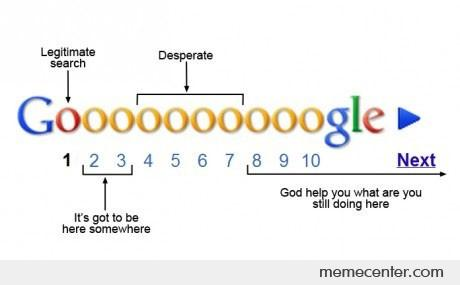

kbeznak parmatonic is a new word coined by Dr.Caverlee for a SEO(Search Engine Optimization) Contest as part of CS670:Information Retrieval.
Let's take a step back and think about how we got here.
If you're like most people, you probably googled for "kbeznak parmatonic" and followed one of the first few links.
Turns out that this is true for webpages in general, since 93% of online experiences begin with the search engine.
I am willing to bet that the remaining 7% comprises of websites like facebook and twitter which are popular enough that users actually remember the url.
In general, it is safe to say that a webpage will never reach anyone if it is not indexed by a search engine.
It gets worse, turns out that just showing up in the results page of a sarch engine is not enough, it is important to be at the top in order to reach people. According to a 2013 study, 33% of the users click the first link in the search results and 95% never look past the first page.
So, an upcoming business will never find any customers if its website is not ranked highly by search engines. This is where SEO comes to the rescue! SEO refers to strategies to make sure that a website ranks high in the results page and stays there. SEO has become a necessity for any business that wants to be competitive in today's world.
One of the goals of this course is to understand how search engines find and return the relevant information among the billions of web pages on the Internet. Dr.Caverlee's genius insight was that by having us try to propel our web page for a hitherto unseen term(kbeznak parmatonic) to the top of the search result list, we'll learn more about how Google decides which pages are most relevant to the search query and deserve to be at the top.

Google uses a number of techniques to ensure that only the most relevant results appear at the top, one important idea is PageRank which tries to estimate how good a webpage is by looking at the webpages which link to it. However, PageRank alone is not enough and Google does a lot more behind the scenes to thwart people trying to game the ranking system.
So far, many attempts have been made to try and paint kbeznak parmatonic as a grave problem for America or as a company or even as a Graduate Student at Texas A&M University. This is not the approach I am taking though, I believe that providing useful and high quality content is a better approach. Besides, I am terrible at cooking up my own stories and trying to make one for kbeznak parmatonic seems like a bad idea!
For now, that's everything you need to know about kbeznak parmatonic. Stay tuned for more!